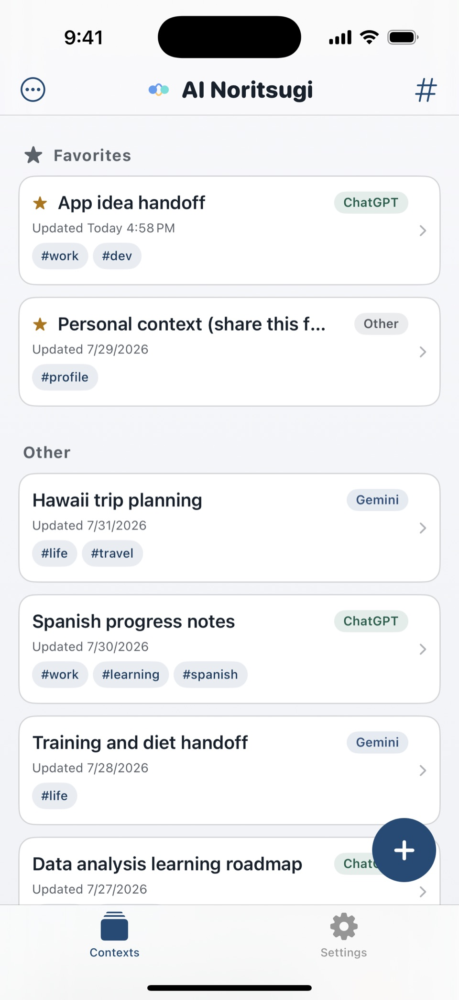

Context handoffs between AIs
Switch AI.
Keep your thread.
Pick up in Claude where you left off in ChatGPT. Save the context behind a conversation instead of the whole transcript, and it's ready to paste into whichever AI you open next. A context manager for iPhone — no account, no ads.
iOS 18.0 or later / iPhone
Everything you've saved, in one place.

Four tools for carrying context
-
Save from the share sheet
Select any text — an answer from an AI, or a note of your own — and pick AI Noritsugi from the share sheet. It's saved as a context: a reusable brief you can hand to any AI.
-
Organize with tags and search
Every context shows the AI it came from, when you last edited it, and its tags. Favorites and search keep the one you need close at hand.
-
Carry it to the next AI
Tap Pass to AI: the text is copied and the app you picked opens — all that's left is to paste. Choose from ChatGPT, Claude, Gemini, and more.
-
Insert without leaving the app
Switch to the AI Noritsugi keyboard inside any app and drop a saved context straight into the text field. If you type Japanese, it's a full IME too: kana-kanji conversion, live conversion, and a one-handed layout.
Export and import your contexts as JSON — for backups or for moving to a new iPhone.
Your context stays on your iPhone
The app never calls the ChatGPT, Claude, or Gemini APIs, and it never uploads what you save. The keyboard and share-sheet extensions make no network requests. The main app collects anonymous usage statistics to help us improve it — never the text you write. See the Privacy Policy for details.
Never brief an AI from scratch again.
Common questions are answered on the support page. Contact: tempuraapps.support@gmail.com